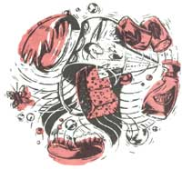

EARTH DIARY
Make your own natural, effective, and inexpensive cleaners.
As more people strive to better both the environment and their health, many are turning to alternative cleansing products in order to escape chemical-filled brand names. While it's not easy to make all the necessary switches at once, there are solutions within reach. The homemade products below are easy to make, and you can buy all of the ingredients at any grocery store. Mix them, put them in a pump spray bottle, grab a rag, and get to work.
•Mix vinegar with salt and water; spray.
•Combine ¼ cup of baking soda and one tablespoon of water to form a paste.
•Combine two tablespoons of ammonia, 2 tablespoons liquid detergent, and one quart of warm water; spray.
• ½ cup bleach and one cup of water will remove mildew from tile. Put on a stain and let sit for five minutes; rinse with clean water.
•Vinegar and water removes mildew and mold from shower curtains.
•Borax and lemon juice cleans and deodorizes the toilet.
•Mix one cup baking soda, one cup salt, and one cup of white vinegar. (It will fizz.) Let it sit for 15 minutes then pour it into the clogged drain. Pour in several cups of boiling water.
•Scrub oven with baking soda, salt, and water paste.
•Sprinkle baking soda on stains and scrub after five minutes with a damp cloth. Do not let the baking soda come into contact with any of the oven's wires or heating elements.
•Mix two tablespoons of vinegar to each quart of water; spray, and wipe.
•Mix ¼ cup cornstarch, ½ cup ammonia and one cup vinegar. Spray this on windows or shower doors to remove rust and lime deposits. Gloves will come in handy when using ammonia.
•Simmer cinnamon sticks or sliced citrus of your choice in water.
•You can also spray a mixture of one teaspoon baking soda and one teaspoon lemon juice that has been dissolved in two cups of hot water.
•Mix two teaspoons lemon oil and one pint of mineral oil in a spray bottle; spray, and wipe.
•Mix one cup of vinegar in a bucket of water; mop.
•Dissolve ½ cup of borax in two gallons of hot water; mop.
In some instances, only a commercially prepared product will give you good results. If that's the case, use the following guidelines to manage the amount of toxic household products you purchase.
•Choose the least toxic product by reading labels for ingredients, storage, disposal, and hazards.
•Avoid aerosols that disperse fumes into the air. Instead, choose powder, paste, or liquid types of products.
•Even if you don't completely eliminate harsh cleaners, you can use them less frequently. By using your own safer products, even some of the time, you are lessening your family's exposure to some harmful chemicals and helping to protect the environment.
|
 ILLUSTRATION BY JULIETTE BORDA |
|
|